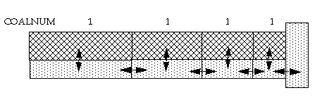

For the instant desorption model the pore volume has the usual interpretation, and the adsorption desorption process is represented as a source sink term into the matrix pore system. It should be noted that the coal volume of each matrix subgrid cell is computed from the average grid cell volume of each coal cell, where the pore volume of all the connected matrix and fracture grid cells are subtracted. If ROCKFRAC is specified for a non-coal cell, this volume is also subtracted from the coal volume. The coal volume is then distributed evenly between the coal cells.

In combination with the multi porosity option the matrix subgrid cells are assigned pore volumes and rock/coal volumes automatically if the NMATOPTS keyword is present. The primary (outer) matrix pore and rock volume is partitioned among the matrix subgrid cells. Note that the pore volume of the fractures are subtracted from the rock volume. The primary matrix subgrid cells need to be defined as coal by COALNUM in order to tell that the matrix contains adsorbed gas. To redefine the matrix subgrid cells with a coal region number the keyword COALNUMR should be used. Only the pore volume and coal volumes as defined by the primary matrix sub-grid cells are used to generate the matrix sub-grid cells coal and pore volumes.
Note that having different adsorption properties for the different subcells also means that the partitioning of the volumes between the subcells becomes important.
It is possible to assign a rock density for each coal region number by the keyword CRNDENS in order to assign different density to the matrix subgrid cells.